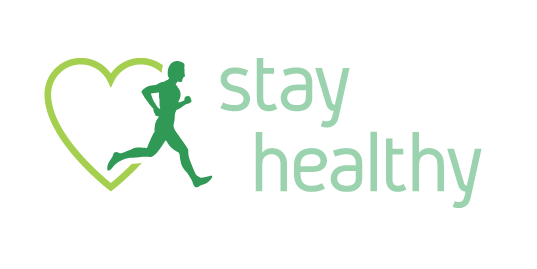

Stay Healthy is a well known hospital that provides treatment for different diseases since 2010. It has four different branches in India. The hospital organizes free health checkup camps every month and is well-known for regular meeting of patients with health experts. Expert doctors of the hospital provide information and possible solutions for patients' illness along with regular diet plans. However, due to venue, dates and other arrangement issues, these camps include limited number of people.